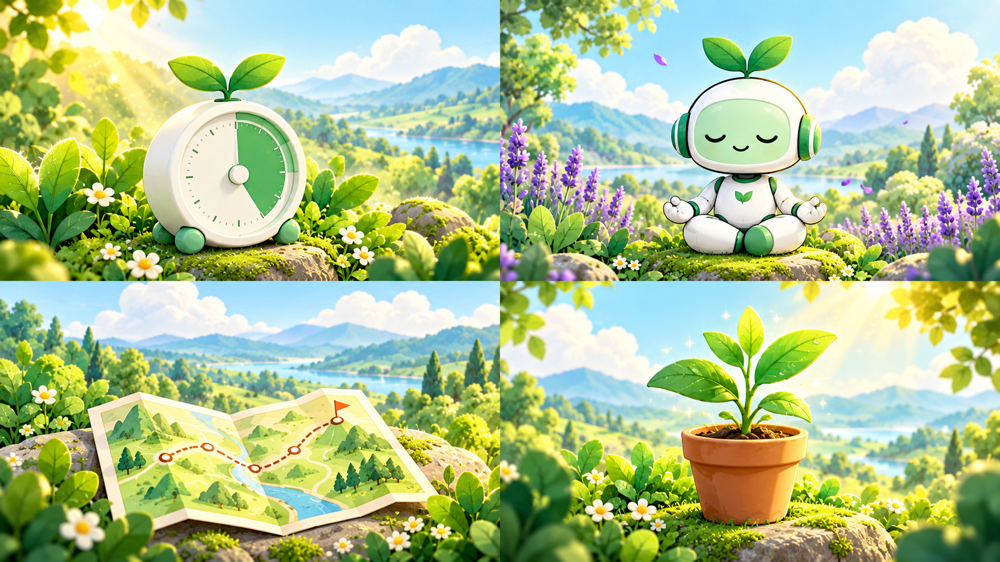

01 / FOCUS
Find your focus
Set a timer, quiet the noise, and make space for what matters most.
LESS SCROLLING, MORE LIVING
Your screen time can feel lighter. Find your focus, build gentle routines, and celebrate every small step with DeepSprout.
The noise can wait. A moment reclaimed becomes a seed.
Find your focus. Let it take root.
01 / WHAT YOU'LL FIND
Simple tools that turn your intentions into a rhythm you can actually enjoy.

Set a timer, quiet the noise, and make space for what matters most.
A little stillness can change the whole feel of your day.
Try small real-world quests that bring you back to the moment.
Watch your garden reflect the good habits you're building.
Not another loop. A way forward.
02 / THE JOURNEY
No perfect streaks required. Just a clear path from where you are to where you want to be.
Try the experienceTell us what you want more room for. We’ll help you find your starting point.
Try a short focus check and get a plan that fits your real life.
Focus, breathe, and explore with simple activities you can return to.
Every mindful choice becomes part of the garden you’re creating.
03 / A MOMENT FOR YOU
Explore how DeepSprout makes better habits feel natural. Pick a practice and try it right here.
A LITTLE SPACE TO THINK
LET YOUR MIND SETTLE
Follow the gentle rhythm for one quiet minute.
YOUR NEXT REAL-WORLD MOMENT
Leave your phone behind and notice three things you haven't seen today.
04 / PROOF OF PROGRESS
Progress doesn't need to be loud. Try checking off a few small moments and watch the garden respond.
READY WHEN YOU ARE
That little moment? Look what it became.
Less mindless scrolling. More time for the things that make you feel like you.